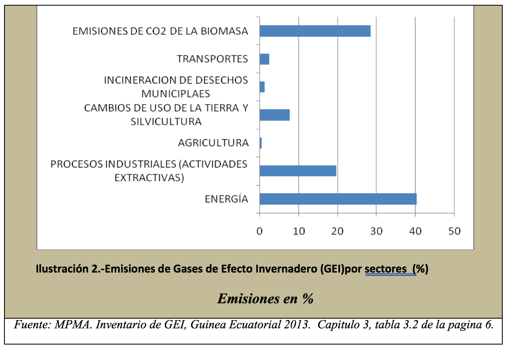
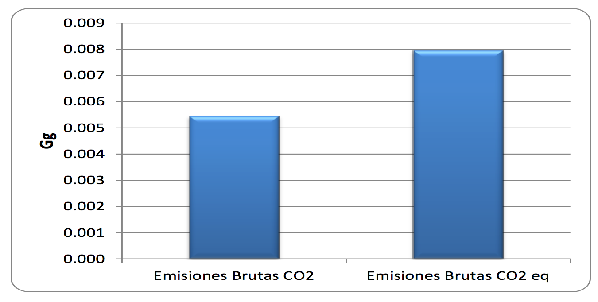

Malabo, September of 2015
One of the requirements of the nineteenth Conference of the Parties (CoP-19) of the United Nations Framework Convention on Climate Change (UNFCCC), held in Warsaw, Poland, in 2013, was to invite countries Parties to make efforts to initiate and intensify preparations for the elaboration of so-called Nationally Determined and Predicted Contributions (CPDNs or INDCs). For the sole purpose of achieving a global compromise that tends to minimize greenhouse gas (GHG) emissions, in a binding global agreement.
The convention has considered the year 2015 as a key in the negotiations and a lot of expectation for the future of Mother Earth, depending on the Agreement on Global Climate Change; The United Nations Framework Convention on Climate Change (UNFCCC), is mandated by COP17 in Durban, South Africa, to approve a binding agreement at COP21 in Paris, which was the priority theme of COP20 in Lima. In December 2014, thus adopting decision 1 / COP20. As an indicator of the political support of the parties, an initiative has been taken to implement the NDCPs, with priority being their scope, definition, obligatoriness as well as their transparency.
In order to ensure the applicability of the above, most of the Parties to the Convention are prepared to participate in the common fight against climate change. In effect, it has been determined that Contributions will be submitted to the Secretariat of the Convention no later than October 1, 2015, for consideration in the preparation of the Final Agreement. For this reason, the Republic of Equatorial Guinea as a Party to the Convention has been pleased to prepare and submit this Contribution; It reflects the reality of the country and justifies the political will of the Government to combat the effects of climate change.
Establish mechanisms for the reduction of greenhouse gas emissions (GHG) in the long term; To place the progression of countries in the fight against climate change in the period 2030-2050 in line with the post-2050 trajectory, in order to contain the increase in global warming below 2 ° C in relation to the pre-industrial period. The Contribution of the Republic of Equatorial Guinea has been elaborated under the supervision of the Ministry of Fisheries and Environment, through the General Directorate of the Environment through the collaboration of: Group of Experts of the National Coordination of Climate Change and The International Technical Assistance. The data collected in the documentation are of national and international origin, with a participatory approach of key actors such as: Representatives of Sectoral Ministries, civil society, Civil Society Organization, Private Sector, Bilateral and Multilateral Cooperation. Due to its character, the contributions planned and determined at national level in the Republic of Equatorial Guinea are articulated in two main thematic axes:
I. Adaptation to climate change, as a vulnerable country; Including:
II. The mitigation of greenhouse gas emissions (GHG) to the atmosphere, taking into account the most influential sectors in the national climate impact:
To do this, it is essential to guarantee both national and international funding, in order to meet identified needs.
Located near the equator in the Gulf of Guinea, the Republic of Equatorial Guinea; It borders the Republic of Cameroon, South and East with Gabon, and to the west with the Equatorial Atlantic Ocean. It shares the maritime borders with Nigeria, Sao Tome and Principe, Gabon and Cameroon (Figure 1). The country is comprised of two regions: the island region and the continental region comprising much of the country's area; The other insular part comprising the islands of Bioko, Annobon located in the Southern Hemisphere, as well as the islets of Corisco, Elobey Grande, Elobey Chico and Mbañe. It has a total surface area of 28,051.46 km2.
The Country has an Exclusive Economic Zone (sea area) of 314,000 km², 11 times greater than the surface of the mainland; With 600 km of coastline, which is usually rough, with some bays and cables standing out.
Equatorial Guinea's climate is rainy rainforest according to Köppen, with traits of tropical savanna at its easternmost end. The geographical conditions that significantly modify the climate of the territory in its mainland (Muni River) are the existence of the coast and the relief of the southern portion, mainly in the southeast part where is located Mount Mitra (1200 m) . The population of Equatorial Guinea is 1,014,999 inhabitants, with more than 70% of the population living in rural areas, and the economy largely depends on the extraction of oil and liquefied gas, as well as the export of wood, cocoa and coffee.
Figure 1. Map of Equatorial Guinea
It should be noted that, in the global context, the increase in CO2 emissions accelerated after the year 2000, increasing by 35% between 2000 and 2011, compared to 10% of the increase recorded between 1990 and 2000. This was mainly due To the rapid increase in emissions in developing regions. Moreover, in developed regions, the average per capita CO2 emissions have been considerably higher than in the developing regions (World Bank, 2011). [See: World Bank. World Atlas of Data (2000-2010). Available at: http://data.worldbank.org/data-catalog/world-development-indicators. ]
Despite global trends, however, in Equatorial Guinea, there was a considerable reduction whether seen in total per capita amounts or per dollar of GDP. It is noteworthy that, from levels of 10.6 metric tons per capita in 2003, it was able to reduce emissions to 6.7 metric tons per capita in 2010 by reducing tree felling and other measures (Bank World, 2011) [Ibit].
For the planning of the Greenhouse Gas Inventory in the Republic of Equatorial Guinea, some sectors were selected based on the level of their emissions.
The small importance of CO2 emissions by forests in the country makes when the analysis incorporates emissions and removals from the Land Use Change and Forestry sector, the country's net emissions are reduced very little compared to Gross emissions.

Figure 3.-Emisiones de CO2 eq (Gg) por GEI. Guinea Ecuatorial,2013.
As can be seen in figure 3, in CO2eq emissions, Carbon Dioxide (CO2) and Methane (CH4) have the greatest contribution to heating, while Nitrous Oxides (N2O) contributions are practically negligible in the country With only 1% of emissions.
Figure 4 shows the results obtained in the calculation of the annual per capita emissions of CO2 and GHG for the year evaluated in the 2013 report; Gross CO2 emissions (in Gg CO2) and gross aggregate GHG emissions (in Gg CO2eq) are used for this calculation, which are the most frequently used indices for this purpose internationally.
Figure 4. Per capita emissions of CO2 (t CO2 / person), and other GHGs (t CO2 - eq / person). Equatorial Guinea, 2013.
Although levels of national CO2 emissions have declined over the period 2003-2010, there are indications that impacts may be latent. In fact, the change in environmental factors is becoming increasingly acute both in the Insular Region and in the Continental, taking as reference the same time intervals.


Figure 5.- Variation of the monthly values of the surface temperature for the period 1951-2019. The red line represents a moving average of 12 pts. Source: Ministry of Fisheries and Environment, 2013. PANA. Figure nº12 on page 34.
Equatorial Guinea, lacking meteorological stations for the measurement and evaluation of climatic factors (agrometeorology, hydrometeorology, wind isobars, etc.), is limited in knowledge about climate change and its effects. Based on the forecasts, it is exposed to greater rainfall variability (drought in general, higher showers and sunny days), higher temperatures and an increase in sea level (along with more frequent storms and waves). The population is confirming changes in climate behavior such as more frequent storms, floods, drought of springs and generally higher temperatures (MPMA, PANA, 2013). All of this justifies their high vulnerability. The sectors that are most vulnerable to climate change are agriculture, fishing, energy, housing, education, sanitation, drainage, health and the environment. The losses resulting from these damages, despite being very considerable, are currently difficult to quantify economically in the absence of statistical records.
Equatorial Guinea is a developing country whose economy depends exclusively on extractive industries and has to face a number of development challenges, such as poverty, education, health, road infrastructure, etc. Although, in terms of emissions, the Republic of Equatorial Guinea represents less than 0.1% of global emissions, however, the emissions trends of some economic sectors are important, especially energy, CO2 emissions from the Biomass, extractive industrial processes and changes in land use.
In 2007, the Government adopted the National Plan for Economic and Social Development (PNDES) to Horizon 2020, which fits in perfectly with the Millennium Development Goals and the ambitions to reduce CO2 emissions; Since it is committed to the diversification of the economy, with a focus on the green economy (tourism, forestry, business, etc.).
Based on the above, Equatorial Guinea's ambition is to reduce its emissions by 20% by 2030, compared to 2010 levels; With a view to achieving a 50% reduction by 2050. This is conditional on favorable and predictable support and that climate finance mechanisms be made viable and distortions of existing market mechanisms corrected. Favorable technical and financial support is needed from both the national government and the international community.
The Government of the Republic of Equatorial Guinea, aware that climate change is a phenomenon with an international dimension, which is a priority and within the framework of its development policy, has established actions on the basis of very clear objectives and orientations through Of state structures, local communities, the private sector as well as civil society organizations. This guidance is based on: adaptation and mitigation measures.
With the adoption of the National Action Plan for Adaptation to Climate Change (NAPA) in 2013, the country develops the strategy to promote resilience to climate change in all sectors, with concrete proposals in the short and medium term. Among the proposed actions are:
The Government will strengthen current initiatives in the electricity sector by taking advantage of available renewable resources, highlighting the following actions:
Table 1: Adaptive actions and their estimated costs (in millions of US $)
| Actions | estimated cost | |
|---|---|---|
| 2015-2030 | 2030-2050 | |
| Carrying out periodic diagnoses on climate vulnerability at the national level, according to international standards | 12,3 | 14,5 |
| Construction of meteorological stations throughout the national scope for the proper monitoring of climatic factors in each area of the territorial administration | 17,5 | 13,5 |
| Installation of early warning systems for climate risks and other natural disasters | 15,2 | 28,7 |
| Periodic analysis of the resilience capacity of all infrastructures undertaken and ongoing | 11,5 | 22,3 |
| Location of rainfall stations in hydroelectric plants to monitor changes in rainfall | 16,5 | 31,2 |
| Establishment of mechanisms to achieve integrated management of watersheds | 12,7 | 25,3 |
| Promotion of agricultural production systems with better resilience to climate change | 13,5 | 17,3 |
| Restoration of different ecosystems susceptible to losing their resilience | 15,3 | 18,5 |
| Total | 114,5 | 171,3 |
Tabla 2: Attenuation sectors and their estimated costs (in millions of US $)
| Sectors | estimated costs | |
|---|---|---|
| 2015-2030 | 2030-2050 | |
| Energy sector | 544,5 | 914,7 |
| Transportation Sector | 834,6 | 1324,5 |
| Forestry sector | 623,7 | 836,3 |
| Agriculture and Land Use Chnage Industrial Sector | 1435,3 | 2356,8 |
| Waste sector | 235,2 | 523,5 |
| Total | 3673,3 | 5955,8 |
Tabla 3: Other needs and their estimated costs (in millions of US $)
| Thematic | estimated costs | |
|---|---|---|
| 2015-2030 | 2030-2050 | |
| Institutional Needs | 44,5 | 64,2 |
| Information, Awareness and Education on Climate change | 24,8 | 32,3 |
| Training and research applied to Climate Change | 83,7 | 123,7 |
| Total | 153,0 | 220,2 |
| CPDN Drafting Team |
|---|
|
| Review Team |
| Excmo. Sr. Estanislao DON MALAVO: Ministro de Pesca y Medio Ambiente Excma. Sra. Adoración SALAS CHONCO: Secretaria de Estado de Pesca y Medio Ambiente Sr. D. Demetrio IVITI NSUGA (Ingeniero Técnico Agrónomo): Punto Focal de la Capa de Ozono |
| Citation of the document |
| Ministerio de Pesca y Medio Ambiente (MPMA). Contribuciones Previstas Determinadas a nivel Nacional. Malabo, Agosto de 2015. |
| Support material: (I) Informe sobre inventario nacional de gases de efecto invernadero de 2013, por el MPMA con el apoyo financiero de GEF; (II) Plan de Acción Nacional para la Adaptación al cambio climático (PANA), adoptado en 2013, por el MPMA gracias al apoyo financiero de GEF/PNUD; y (III) Programa de Desarrollo Socio-económico Horizonte 2020, Ministerio de Planificación y Desarrollo Económico; Primera Comunicación Nacional de Cambio Climático en Guinea Ecuatorial. (IV) Documento de proyecto “Energía sostenible para todos”-PIMS 5143. |